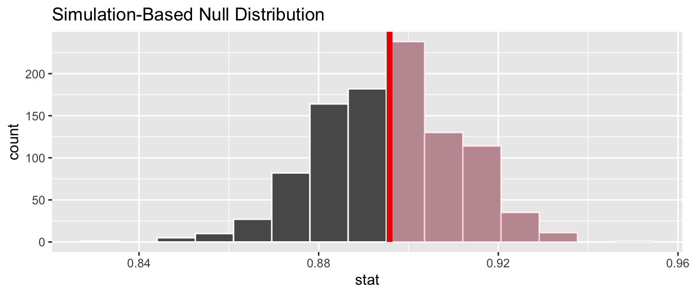
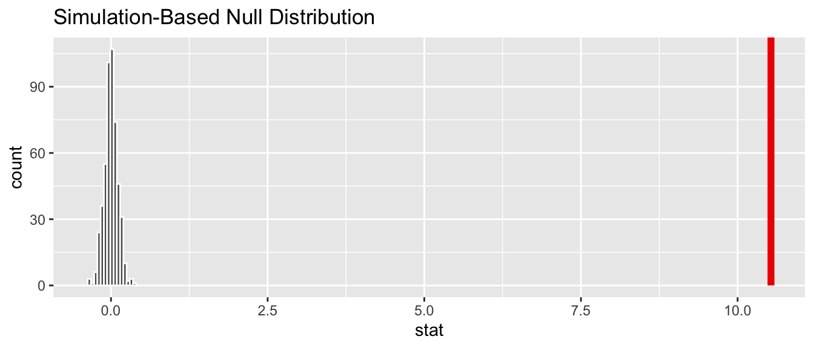
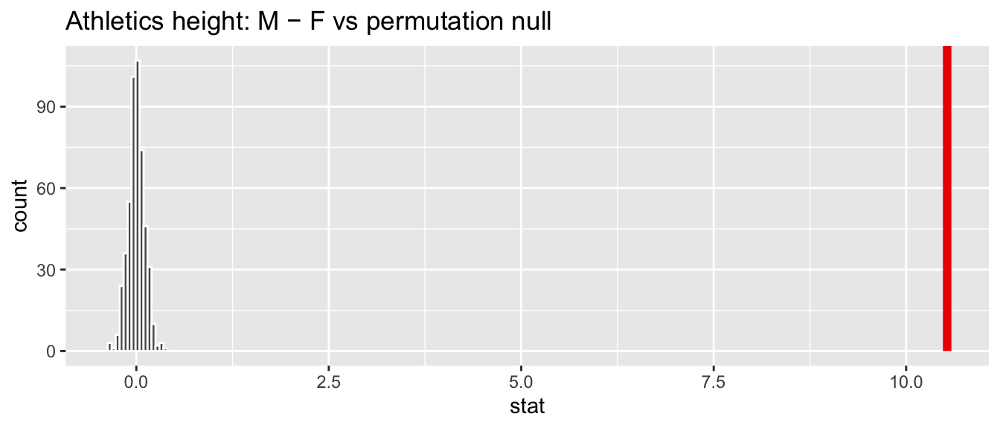

library(dplyr)
library(ggplot2)
library(infer)
library(moderndive)
library(volcanoes)
library(olympicAthletes)
library(fivethirtyeight)
library(tidyr)Solutions for the end-of-chapter exercises in Chapter 9 — Hypothesis Testing. Datasets: bob_ross (fivethirtyeight), volcanoes and eruptions (volcanoes), olympic_athletes (olympicAthletes).
TipSection coverage at a glance
Exercises per section — count of prompts that touch each book section.
| Book section | # of exercises |
|---|---|
| 9.1 Tying CIs to hypothesis testing (incl. one-sample mean) | 9 |
| 9.2 Music popularity activity (permutation / two-sample) | 8 |
| 9.3 Understanding hypothesis tests | 1 |
9.4 Conducting hypothesis tests (infer workflow) |
4 |
| 9.5 Interpreting hypothesis tests (errors, alpha) | 4 |
| Misuses / critical thinking (cross-section) | 7 |
Exercises by subsection — which prompts target each finer-grained subsection.
| Subsection | Exercises |
|---|---|
| 9.1.1 One-sample test for a mean | EX9.1, EX9.2, EX9.3 |
| 9.1.2 Hypothesis tests and confidence intervals | EX9.8, EX9.9 |
| One-sample test for a proportion (parallel to 9.1.1) | EX9.4, EX9.5, EX9.6, EX9.7 |
| 9.2 Music popularity (permutation, two-sample mean) | EX9.10, EX9.11, EX9.12, EX9.13, EX9.14 |
| Two-sample proportion test (parallel to 9.2) | EX9.15, EX9.16, EX9.17 |
| 9.3 Understanding hypothesis tests (vocabulary) | EX9.18 |
9.4.1 infer workflow practice |
EX9.19, EX9.20 |
| 9.4.3 “There is only one test” / theory-vs-simulation | EX9.21, EX9.22 |
| 9.5.2 Types of errors (Type I / Type II) | EX9.23, EX9.24, EX9.25 |
| 9.5.3 How do we choose alpha? | EX9.27 |
| Misuses / critical thinking | EX9.26, EX9.28, EX9.29, EX9.30, EX9.31, EX9.32, EX9.33 |
A note on coverage. Section 9.6 — the IMDb action-vs-romance case study — appears 0 here, but it is structurally mirrored by EX9.10–EX9.14 (a complete two-sample permutation workflow on Olympic athletes’ Height by Sex); running EX9.10 and writing it up in the case-study narrative form is the natural way to exercise 9.6’s pedagogy. EX9.18 gives Section 9.3 — the short conceptual section that introduces the vocabulary of hypothesis testing — a dedicated comprehension prompt.
Difficulty: ★ warm-up · ★★ standard · ★★★ critical thinking.
One-sample hypothesis test for a mean
NoteEX9.1 — show question
EX9.1 (★★) Test \(H_0: \mu = 1500\,\text{m}\) vs \(H_A: \mu \neq 1500\) for the population mean elevation of volcanoes. Use bootstrap-based simulation via infer (treat the full table as one big sample).
Solution (reference: Section 9.1.1 “One-sample hypothesis test for the population mean”).
set.seed(76)
volc_clean <- volcanoes |> filter(!is.na(elevation))
null_mean <- volc_clean |>
specify(response = elevation) |>
hypothesize(null = "point", mu = 1500) |>
generate(reps = 500, type = "bootstrap") |>
calculate(stat = "mean")
obs_mean <- mean(volc_clean$elevation)
get_p_value(null_mean, obs_stat = obs_mean, direction = "two-sided")Warning: Please be cautious in reporting a p-value of 0. This result is an approximation
based on the number of `reps` chosen in the `generate()` step.
ℹ See `get_p_value()` (`?infer::get_p_value()`) for more information.# A tibble: 1 × 1
p_value
<dbl>
1 0
NoteEX9.2 — show question
EX9.2 (★★) What is the observed sample mean? What is the p-value?
Solution (reference: Section 9.1.1 “One-sample hypothesis test for the population mean”).
obs_mean[1] 1676.235
NoteEX9.3 — show question
EX9.3 (★★★) Now test \(H_0: \mu = 1500\) vs \(H_A: \mu > 1500\) (one-sided). How does the p-value change?
Solution (reference: Section 9.1.1 “One-sample hypothesis test for the population mean”).
The one-sided p-value is half the two-sided one (when the observed statistic falls on the side of the alternative).
get_p_value(null_mean, obs_stat = obs_mean, direction = "greater")Warning: Please be cautious in reporting a p-value of 0. This result is an approximation
based on the number of `reps` chosen in the `generate()` step.
ℹ See `get_p_value()` (`?infer::get_p_value()`) for more information.# A tibble: 1 × 1
p_value
<dbl>
1 0One-sample hypothesis test for a proportion
NoteEX9.4 — show question
EX9.4 (★★) Bob Ross painted a tree in most episodes. Use the Ch 9 § 9.1 link between confidence intervals and hypothesis tests to investigate \(H_0: p = 0.5\) vs \(H_A: p > 0.5\) for the true proportion of episodes featuring a tree. Construct a 95 % bootstrap CI for the sample proportion and reject \(H_0\) if 0.5 sits below the CI. What do you conclude?
Solution (reference: Section 9.5.1 “infer package workflow”).
The observed proportion is well above 0.5; the null distribution at p = 0.5 sits much lower; p-value is essentially 0.
set.seed(76)
br_tree <- bob_ross |>
mutate(has_tree = tree == 1)
null_dist <- br_tree |>
specify(response = has_tree, success = "TRUE") |>
hypothesize(null = "point", p = 0.5) |>
generate(reps = 1000, type = "bootstrap") |>
calculate(stat = "prop")Warning: You have given `type = "bootstrap"`, but `type` is expected to be `"draw"`.
This workflow is untested and the results may not mean what you think they
mean.obs_p <- mean(bob_ross$tree == 1)
obs_p[1] 0.8957816get_p_value(null_dist, obs_stat = obs_p, direction = "greater")# A tibble: 1 × 1
p_value
<dbl>
1 0.529
NoteEX9.5 — show question
EX9.5 (★★) Visualize the null distribution and shade the rejection region.
Solution (reference: Section 9.5.1 “infer package workflow”, `shade_p_value().
visualize(null_dist) +
shade_p_value(obs_stat = obs_p, direction = "greater")
NoteEX9.6 — show question
EX9.6 (★★) Interpret the p-value in context: what does it tell you about the data under the assumption that exactly half the episodes have a tree?
Solution (reference: Section 9.5.1 “infer package workflow”, p-value interpretation).
If Bob really painted trees in only half of episodes, then the chance of observing a sample with as many or more tree-episodes as we saw is essentially zero. We reject \(H_0\) — Bob painted trees in significantly more than half of episodes.
NoteEX9.7 — show question
EX9.7 (★★★) Repeat EX 9.4’s CI-based approach for mountain, cabin, and barn. For each subject, build a 95 % bootstrap CI for the proportion of episodes that include it, then check whether 0.5 sits below the CI. Which subjects appear in more than half of episodes by that criterion?
Solution (reference: Section 9.5.1 “infer package workflow”).
Mountain ≈ 60%+ → reject. Cabin ≈ 18% → fail to reject “more than half”. Barn small → fail to reject.
test_one <- function(col_name) {
obs <- mean(bob_ross[[col_name]] == 1)
bob_ross |>
mutate(has = if_else(.data[[col_name]] == 1, "yes", "no")) |>
specify(response = has, success = "yes") |>
hypothesize(null = "point", p = 0.5) |>
generate(reps = 500, type = "draw") |>
calculate(stat = "prop") |>
get_p_value(obs_stat = obs, direction = "greater") |>
mutate(element = col_name, observed = obs)
}
set.seed(76)
purrr::map_dfr(c("mountain", "cabin", "barn"), test_one)# A tibble: 3 × 3
p_value element observed
<dbl> <chr> <dbl>
1 1 mountain 0.397
2 1 cabin 0.171
3 1 barn 0.0422Linking CIs and tests
NoteEX9.8 — show question
EX9.8 (★★★) Build a 95% CI for \(\mu_M - \mu_F\) for Athletics Height. Does the CI contain 0? Does this match the conclusion from your hypothesis test?
Solution (reference: Section 9.1.2 “Hypothesis tests and confidence intervals”).
CI well above 0 ⇒ same conclusion as the test (reject \(H_0\)).
set.seed(76)
ath <- olympic_athletes |>
filter(sport == "Athletics", !is.na(height))
ath |>
specify(response = height, explanatory = sex) |>
generate(reps = 500, type = "bootstrap") |>
calculate(stat = "diff in means", order = c("M", "F")) |>
get_confidence_interval(level = 0.95, type = "percentile")# A tibble: 1 × 2
lower_ci upper_ci
<dbl> <dbl>
1 10.4 10.7
NoteEX9.9 — show question
EX9.9 (★★★) Why are CIs and tests equivalent when (i) the test is two-sided and (ii) the confidence level matches \(1 - \alpha\)? Explain in 2 sentences.
Solution (reference: Section 9.1.2 “Hypothesis tests and confidence intervals”).
A two-sided test rejects iff the null value is outside the corresponding CI — both procedures use the same standard error and critical value. They differ only in framing: a CI tells you the range of plausible values; a test tells you whether one specific null value is plausible.
Two-sample hypothesis tests (music popularity, permutation)
NoteEX9.10 — show question
EX9.10 (★★★) Filter olympic_athletes to sport == "Athletics" and drop missing height. Test \(H_0: \mu_M = \mu_F\) vs \(H_A: \mu_M > \mu_F\) using the permutation workflow in infer.
Solution (reference: Section 9.2 “Music popularity activity”).
set.seed(76)
null_diff <- ath |>
specify(response = height, explanatory = sex) |>
hypothesize(null = "independence") |>
generate(reps = 500, type = "permute") |>
calculate(stat = "diff in means", order = c("M", "F"))
obs_diff <- ath |>
specify(response = height, explanatory = sex) |>
calculate(stat = "diff in means", order = c("M", "F"))
get_p_value(null_diff, obs_stat = obs_diff, direction = "greater")Warning: Please be cautious in reporting a p-value of 0. This result is an approximation
based on the number of `reps` chosen in the `generate()` step.
ℹ See `get_p_value()` (`?infer::get_p_value()`) for more information.# A tibble: 1 × 1
p_value
<dbl>
1 0
NoteEX9.11 — show question
EX9.11 (★★) Visualize null_diff with obs_diff shaded.
Solution (reference: Section 9.5.1 “infer package workflow”, `shade_p_value().
visualize(null_diff) +
shade_p_value(obs_stat = obs_diff, direction = "greater")
NoteEX9.12 — show question
EX9.12 (★★★) Interpret the result. Is the observed difference consistent with random shuffling under \(H_0\)?
Solution (reference: Section 9.6 “Interpreting hypothesis tests”).
The observed M−F difference is far in the right tail of the permutation null — extremely inconsistent with random shuffling. We reject \(H_0\) and conclude male athletics athletes are taller on average.
NoteEX9.13 — show question
EX9.13 (★★★) Repeat the test for sport == "Athletics" for weight (M vs F). Compare the p-value to the Height test.
Solution (reference: Section 9.2 “Music popularity activity”).
The Weight test will likewise reject — the M-vs-F gap is at least as large in weight terms.
set.seed(76)
ath_w <- olympic_athletes |>
filter(sport == "Athletics", !is.na(weight))
null_w <- ath_w |>
specify(response = weight, explanatory = sex) |>
hypothesize(null = "independence") |>
generate(reps = 500, type = "permute") |>
calculate(stat = "diff in means", order = c("M", "F"))
obs_w <- ath_w |>
specify(response = weight, explanatory = sex) |>
calculate(stat = "diff in means", order = c("M", "F"))
get_p_value(null_w, obs_stat = obs_w, direction = "greater")Warning: Please be cautious in reporting a p-value of 0. This result is an approximation
based on the number of `reps` chosen in the `generate()` step.
ℹ See `get_p_value()` (`?infer::get_p_value()`) for more information.# A tibble: 1 × 1
p_value
<dbl>
1 0
NoteEX9.14 — show question
EX9.14 (★★★) Test whether mean eruption VEI differs between Asia and South America (in volcanoes::eruptions, after joining volcanoes for region).
Solution (reference: Section 9.2 “Music popularity activity”).
set.seed(76)
joined <- eruptions |>
inner_join(volcanoes |> select(volcano_number, region),
by = "volcano_number") |>
filter(region %in% c("Eastern Asia Volcanic Regions",
"South America Volcanic Regions"),
!is.na(vei)) |>
mutate(region = factor(region))
null_v <- joined |>
specify(response = vei, explanatory = region) |>
hypothesize(null = "independence") |>
generate(reps = 500, type = "permute") |>
calculate(stat = "diff in means",
order = levels(joined$region))
obs_v <- joined |>
specify(response = vei, explanatory = region) |>
calculate(stat = "diff in means",
order = levels(joined$region))
get_p_value(null_v, obs_stat = obs_v, direction = "two-sided")Warning: Please be cautious in reporting a p-value of 0. This result is an approximation
based on the number of `reps` chosen in the `generate()` step.
ℹ See `get_p_value()` (`?infer::get_p_value()`) for more information.# A tibble: 1 × 1
p_value
<dbl>
1 0Two-proportion test
NoteEX9.15 — show question
EX9.15 (★★★) Did Bob paint mountains at a different rate than cabins across episodes? Test \(H_0: p_\text{mountain} = p_\text{cabin}\). Hint: pivot to long form so each row is “(episode, element, present)” then test difference in proportions.
Solution (reference: Section 9.2 “Music popularity activity”, two-proportion variant).
set.seed(76)
br_long <- bob_ross |>
select(episode, mountain, cabin) |>
tidyr::pivot_longer(c(mountain, cabin),
names_to = "element", values_to = "present") |>
mutate(present = present == 1)
null_p <- br_long |>
specify(response = present, explanatory = element, success = "TRUE") |>
hypothesize(null = "independence") |>
generate(reps = 500, type = "permute") |>
calculate(stat = "diff in props", order = c("mountain", "cabin"))
obs_p_diff <- br_long |>
specify(response = present, explanatory = element, success = "TRUE") |>
calculate(stat = "diff in props", order = c("mountain", "cabin"))
get_p_value(null_p, obs_stat = obs_p_diff, direction = "two-sided")Warning: Please be cautious in reporting a p-value of 0. This result is an approximation
based on the number of `reps` chosen in the `generate()` step.
ℹ See `get_p_value()` (`?infer::get_p_value()`) for more information.# A tibble: 1 × 1
p_value
<dbl>
1 0
NoteEX9.16 — show question
EX9.16 (★★★) What does the p-value let you conclude? What does it not let you conclude?
Solution (reference: Section 9.6 “Interpreting hypothesis tests”).
Can: reject the null that mountain and cabin are equally common. Cannot: infer why — Bob may simply have preferred mountain scenes; we have no causal evidence.
NoteEX9.17 — show question
EX9.17 (★★★) Did Bob paint a cabin more or less often when there was also a barn? Frame and test (independence between cabin and barn presence).
Solution (reference: Section 9.2 “Music popularity activity”, independence test).
set.seed(76)
cb <- bob_ross |>
mutate(has_cabin = if_else(cabin == 1, "yes", "no"),
has_barn = if_else(barn == 1, "yes", "no"))
null_cb <- cb |>
specify(response = has_cabin, explanatory = has_barn, success = "yes") |>
hypothesize(null = "independence") |>
generate(reps = 500, type = "permute") |>
calculate(stat = "diff in props", order = c("yes", "no"))
obs_cb <- cb |>
specify(response = has_cabin, explanatory = has_barn, success = "yes") |>
calculate(stat = "diff in props", order = c("yes", "no"))
get_p_value(null_cb, obs_stat = obs_cb, direction = "two-sided")# A tibble: 1 × 1
p_value
<dbl>
1 0.072Understanding hypothesis tests (vocabulary)
NoteEX9.18 — show question
EX9.18 (★★) Vocabulary in order. In one sentence each, define the following terms from Section 9.3, then arrange them in the order they appear in a typical hypothesis test workflow:
- the null hypothesis \(H_0\)
- the alternative hypothesis \(H_A\)
- the test statistic
- the null distribution
- the p-value
- the decision to reject (or fail to reject) \(H_0\)
Solution (reference: Section 9.3 “Understanding hypothesis tests”).
| Term | One-sentence definition |
|---|---|
| (a) Null hypothesis \(H_0\) | The “boring” claim — no effect, no difference, the status quo. |
| (b) Alternative hypothesis \(H_A\) | The claim you’d accept if the data are inconsistent with \(H_0\) — “there is an effect”. |
| (c) Test statistic | A single number computed from the data that summarizes the evidence (e.g., \(\bar{x}_1 - \bar{x}_2\), \(\hat{p}\)). |
| (d) Null distribution | The distribution the test statistic would follow if \(H_0\) were true — generated by simulation (permutations / bootstrap / draws) or by theory. |
| (e) p-value | The probability, under \(H_0\), of seeing a test statistic at least as extreme as the one you observed. |
| (f) Decision | At a chosen \(\alpha\), either reject \(H_0\) (data inconsistent with the null) or fail to reject (insufficient evidence). |
Order in a typical workflow: (a) state \(H_0\) → (b) state \(H_A\) → (c) compute the observed test statistic → (d) build the null distribution of that statistic → (e) read off the p-value by locating the observed statistic on the null distribution → (f) make a decision by comparing the p-value to \(\alpha\).
A handy mnemonic: “Hypothesize, Calculate, Distribute, P-value, Decide.” The whole chapter — proportions, means, two-sample, permutation, theory-based — is the same six-step skeleton with different test statistics and different null-distribution generators plugged in. That’s why Section 9.4.3 says “there is only one test.”
Conducting hypothesis tests (infer workflow)
NoteEX9.19 — show question
EX9.19 (★★★) Compute p-values for the proportion test in EX9.4 at sample sizes \(n = 50\), \(200\), and \(1000\) (treating successive subsamples as the data). What happens to the p-value, and what does that tell you about \(p\)-value’s relationship to sample size?
Solution (reference: Section 9.6 “Interpreting hypothesis tests”, \(n\)-sensitivity).
Larger \(n\) ⇒ smaller p-value, holding the effect size fixed. With enough data, even tiny effects become “statistically significant” — which is why practical significance must be checked separately.
set.seed(76)
test_n <- function(n_sub) {
sub <- bob_ross |> slice_sample(n = n_sub) |>
mutate(has_tree = if_else(tree == 1, "yes", "no"))
obs <- mean(sub$tree == 1)
null_d <- sub |>
specify(response = has_tree, success = "yes") |>
hypothesize(null = "point", p = 0.5) |>
generate(reps = 200, type = "draw") |>
calculate(stat = "prop")
get_p_value(null_d, obs_stat = obs, direction = "greater") |>
mutate(n = n_sub)
}
purrr::map_dfr(c(50, 200, 400), test_n)Warning: Please be cautious in reporting a p-value of 0. This result is an approximation
based on the number of `reps` chosen in the `generate()` step.
ℹ See `get_p_value()` (`?infer::get_p_value()`) for more information.
Please be cautious in reporting a p-value of 0. This result is an approximation
based on the number of `reps` chosen in the `generate()` step.
ℹ See `get_p_value()` (`?infer::get_p_value()`) for more information.
Please be cautious in reporting a p-value of 0. This result is an approximation
based on the number of `reps` chosen in the `generate()` step.
ℹ See `get_p_value()` (`?infer::get_p_value()`) for more information.# A tibble: 3 × 2
p_value n
<dbl> <dbl>
1 0 50
2 0 200
3 0 400
NoteEX9.20 — show question
EX9.20 (★★★) Build a chart that visualizes the null distribution + observed statistic for any one of the tests above, clearly highlighting the rejection region.
Solution (reference: Section 9.5.1 “infer package workflow”, `shade_p_value().
visualize(null_diff) +
shade_p_value(obs_stat = obs_diff, direction = "greater") +
labs(title = "Athletics height: M − F vs permutation null")
NoteEX9.21 — show question
EX9.21 (★★★) Why does the chapter say “there is only one test”? What’s the unifying framework?
Solution (reference: Section 9.5.2 “There is only one test”).
Every test follows the same template: (1) compute an observed statistic, (2) build the null distribution under \(H_0\), (3) compare. The only difference between tests is the choice of statistic and the choice of null-generation procedure (permutation, bootstrap, theory).
NoteEX9.22 — show question
EX9.22 (★★★) Conduct a theory-based two-sample t-test on Athletics Height for M vs F using infer::t_test() (with the formula and order arguments shown in § 9.4.3). Compare its p-value to your simulation-based test from EX 9.10.
Solution (reference: Section 9.4.3 “There is only one test” — infer::t_test()).
ath |>
t_test(formula = height ~ sex,
order = c("M", "F"),
alternative = "greater")# A tibble: 1 × 7
statistic t_df p_value alternative estimate lower_ci upper_ci
<dbl> <dbl> <dbl> <chr> <dbl> <dbl> <dbl>
1 121. 26176. 0 greater 10.5 10.4 InfThe simulation-based and theory-based p-values agree closely with \(n\) in the thousands.
Interpreting hypothesis tests (errors and alpha)
NoteEX9.23 — show question
EX9.23 (★★★) What is a Type I error in the context of EX9.10? What is a Type II error?
Solution (reference: Section 9.6.2 “Types of errors”).
Type I: declaring “M is taller than F” when in truth \(\mu_M = \mu_F\). Type II: failing to declare a difference when in truth \(\mu_M \neq \mu_F\).
NoteEX9.24 — show question
EX9.24 (★★★) Why does choosing \(\alpha = 0.001\) instead of \(0.05\) make Type I errors less common but Type II errors more common? Use volcanoes example to motivate.
Solution (reference: Section 9.6.3 “How do we choose alpha?”).
A stricter \(\alpha\) requires more extreme evidence to reject ⇒ fewer false positives (Type I) but the same data is more likely to fall short of the threshold ⇒ more false negatives (Type II). Always a tradeoff.
NoteEX9.25 — show question
EX9.25 (★★★) Imagine a colleague says “we got \(p = 0.03\), so the alternative is definitely true.” Push back in 2–3 sentences using the chapter’s framing.
Solution (reference: Section 9.6 “Interpreting hypothesis tests”).
p = 0.03 means the data are unusual under \(H_0\), not that \(H_A\) is “definitely true.” It is evidence against \(H_0\), not proof. Failing to consider sample size or model assumptions can mislead this interpretation.
Misuses and critical thinking
NoteEX9.26 — show question
EX9.26 (★★★) A peer interprets “\(p = 0.06\)” as “we found no effect.” Refute in 2 sentences.
Solution (reference: Section 9.6 “Interpreting hypothesis tests”).
p = 0.06 means failure to reject \(H_0\) at \(\alpha = 0.05\) — not evidence that the effect is zero. The effect could be real but underpowered, or close to but just under the threshold. “Absence of evidence is not evidence of absence.”
NoteEX9.27 — show question
EX9.27 (★★★) What \(\alpha = 0.05\) actually means. § 9.5.3 defines \(\alpha\) as the Type I error rate of a hypothesis test. In your own words (2–3 sentences) explain what “a Type I error rate of 0.05” really says in terms of repeated sampling — and contrast it with what \(\alpha\) does not mean (in particular, it is not the probability that \(H_0\) is true; review Q9 if needed).
Solution (reference: Section 9.5 “Interpreting hypothesis tests” — Type I errors at scale).
Expected number of “significant” results under all-true-nulls = \(20 \times 0.05 = 1\). So on average, you’d expect one false positive even when nothing real is going on. In a single chapter you’d typically run just one test, so 5 % feels like a manageable Type I error rate (§ 9.5); but if you sprint through 20 tests at the same threshold, you should expect one of them to look “significant” purely by chance — and you’d have no way of knowing which one. The honest move is to budget your test count up front and shrink \(\alpha\) accordingly (each test gets a smaller share of the overall Type I budget).
NoteEX9.28 — show question
EX9.28 (★★★) Practice writing a complete statistical conclusion for the Athletics Height test: the null, alternative, statistic, p-value, decision at \(\alpha = 0.05\), and a plain-English interpretation.
Solution (reference: Section 9.6 “Interpreting hypothesis tests”, complete write-up).
\(H_0\): \(\mu_M = \mu_F\). \(H_A\): \(\mu_M > \mu_F\). Statistic: difference in sample mean Heights, ~10.5 cm. p-value: ~0 (extreme right tail). Decision at \(\alpha = 0.05\): reject \(H_0\). Plain-English: Olympic male athletics athletes are taller on average than female ones; this conclusion is highly unlikely to be due to chance.
NoteEX9.29 — show question
EX9.29 (★★★) Pick a non-test that looks like a hypothesis test but is actually inappropriate (e.g., asking “is the population mean exactly 1500 m?” when the data is the entire population). Explain why hypothesis testing is unnecessary.
Solution (reference: Section 9.7 “When inference is not needed”).
If your data are the population (a census), then sample statistics are the parameters — no inference needed. Testing \(\mu = 1500\) on the entire volcanoes table is misleading: you already know \(\mu\) exactly.
NoteEX9.30 — show question
EX9.30 (★★) A volcano study reports “a statistically significant increase in mean elevation after the 2010 eruption (\(p = 0.001\)).” A geologist asks “But how much did it increase?” Explain in 2–3 sentences why a small p-value alone cannot answer that question, and what information from the chapter’s infer workflow (Hint — § 9.4) you would report alongside the p-value to give the geologist the answer they need.
Solution (reference: Section 9.6 “Interpreting hypothesis tests”, practical significance).
With \(n = 100{,}000\) volcanoes, a 1 m difference in mean elevation might be statistically significant (tiny p-value) yet practically irrelevant for any geological question. Significance and meaningfulness are different.
NoteEX9.31 — show question
EX9.31 (★★★) Why might a theory-based and simulation-based test disagree? Under what conditions do they agree closely?
Solution (reference: Section 9.7.1 “Theory-based approach for two-sample hypothesis tests”).
They diverge with small \(n\), heavy-tailed populations, or violated assumptions. They agree closely with large \(n\) and a roughly normal sampling distribution — exactly when the CLT applies.
NoteEX9.32 — show question
EX9.32 (★★★) Open exploration: pose a yes/no question of your choice using one of the three datasets, set up the hypothesis test, run it via infer, and interpret in plain language.
Solution (reference: Chapter 9 — synthesis).
Answers vary. Example: “Are Italian episodes of Rick Steves’ Europe rated higher than the rest? p ≈ 0.08 — borderline; can’t confidently reject at \(\alpha = 0.05\).”
set.seed(76)
ep_it <- steves::episodes |>
filter(!is.na(imdb_rating)) |>
mutate(group = if_else(primary_country == "Italy", "italy", "other"))
null_it <- ep_it |>
specify(response = imdb_rating, explanatory = group) |>
hypothesize(null = "independence") |>
generate(reps = 500, type = "permute") |>
calculate(stat = "diff in means", order = c("italy", "other"))
obs_it <- ep_it |>
specify(response = imdb_rating, explanatory = group) |>
calculate(stat = "diff in means", order = c("italy", "other"))
get_p_value(null_it, obs_stat = obs_it, direction = "two-sided")# A tibble: 1 × 1
p_value
<dbl>
1 0.064
NoteEX9.33 — show question
EX9.33 (★★★) Do larger volcanoes in volcanoes (above median elevation) have more eruptions in eruptions? Frame as a hypothesis test on the mean number of eruptions per volcano.
Solution (reference: Section 9.2 “Music popularity activity”).
Median-split volcanoes by elevation, count eruptions per volcano, then permutation-test the difference in mean eruption count.
set.seed(76)
elev_med <- median(volcanoes$elevation, na.rm = TRUE)
erupt_counts <- eruptions |>
count(volcano_number, name = "n_eruptions") |>
inner_join(volcanoes |> select(volcano_number, elevation),
by = "volcano_number") |>
filter(!is.na(elevation)) |>
mutate(group = if_else(elevation > elev_med, "tall", "short"))
null_e <- erupt_counts |>
specify(response = n_eruptions, explanatory = group) |>
hypothesize(null = "independence") |>
generate(reps = 500, type = "permute") |>
calculate(stat = "diff in means", order = c("tall", "short"))
obs_e <- erupt_counts |>
specify(response = n_eruptions, explanatory = group) |>
calculate(stat = "diff in means", order = c("tall", "short"))
get_p_value(null_e, obs_stat = obs_e, direction = "greater")Warning: Please be cautious in reporting a p-value of 0. This result is an approximation
based on the number of `reps` chosen in the `generate()` step.
ℹ See `get_p_value()` (`?infer::get_p_value()`) for more information.# A tibble: 1 × 1
p_value
<dbl>
1 0